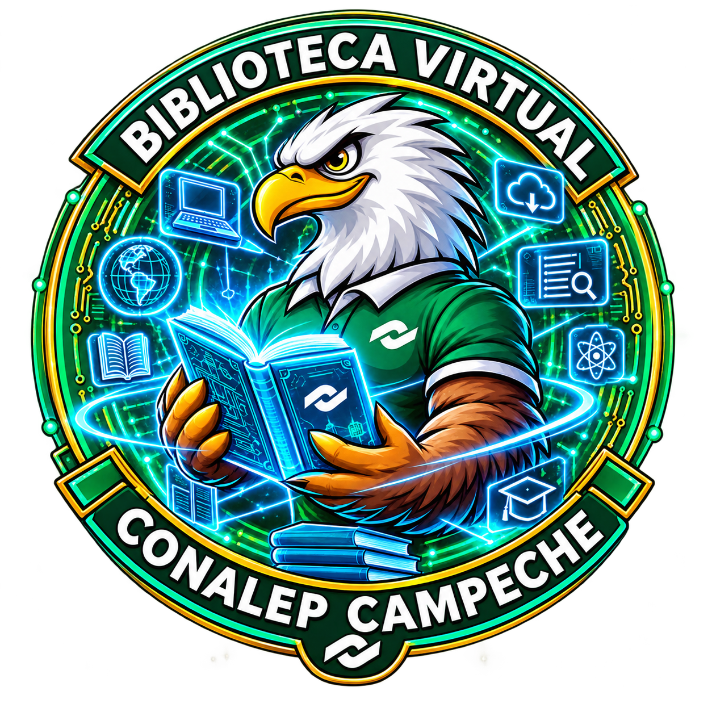

Busca
Escribe el título, autor, tema o palabra clave en el buscador.

CONALEP BIBLIOTECA DIGITALExplora materiales educativos, consulta recursos digitales y encuentra nuevas ideas para continuar aprendiendo.
Encuentra materiales de consulta organizados por áreas de conocimiento.
Un espacio para explorar proyectos, trabajos y recursos relacionados con cada especialidad.
Ingresa a Bibliocarreras para descubrir las especialidades, explorar sus temas y consultar los materiales disponibles.
Explora las materias de las cuatro carreras del plantel. Cada asignatura cuenta con seis volúmenes para organizar sus contenidos, actividades y materiales de aprendizaje.
Se están organizando las materias y sus volúmenes.
Busca en el catálogo o filtra los resultados por categoría.
La Biblioteca CONALEP es un espacio digital de consulta que reúne materiales educativos para apoyar el aprendizaje, la investigación y el desarrollo académico.
Su propósito es facilitar el acceso organizado a recursos de distintas áreas del conocimiento y promover el hábito de la lectura y la búsqueda de información.
Escribe el título, autor, tema o palabra clave en el buscador.
Revisa los resultados y selecciona el material que te interese.
Abre el documento disponible o descarga el archivo para leerlo.